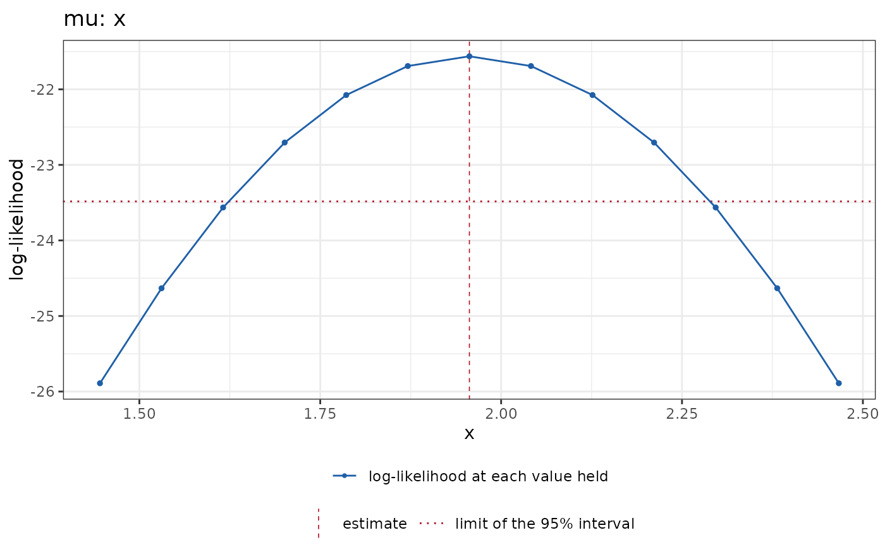

Draws the profile: the criterion of each point against the value held.
The vertical axis is the criterion that the profile maximizes, the
log-likelihood, the penalized log-likelihood, or the criterion reml() or
ml() when a hyperparameter is held, and the column of points that it
reads is the property profile_column.
Usage
# S3 method for class 'StatmodProfile'
autoplot(object, ...)
# S3 method for class 'StatmodProfile'
plot(x, ...)Arguments
- object, x
A StatmodProfile object.
- ...
Unused.
Value
autoplot() returns a ggplot2 object, or a patchwork object for
several panels; plot() returns the same object invisibly, after
printing it.
Details
A profile of one label is drawn as a line through its points, with a
dashed vertical line at the estimate and, where the drop of the profile
is a likelihood ratio, a dotted horizontal line at the maximum minus
\(\chi^2_1(0.95)/2\): the values above it form the interval of
confint.StatmodProfile() at level 0.95. The graph then depends on the
kind of the label:
- a coefficient
the value on the horizontal axis;
- the position of a break-point
a rug of the values of the covariate, at which the profile can have a kink;
- a hyperparameter
the value on the scale of its link, with the natural scale on a second axis;
- the hyperparameter of a path
the criterion that chose it,
bic()oraic(), computed at each point (the columnpath_criterion), with the points that the path scored as open circles. A hyperparameter chosen bycv()is drawn from the path's record, the cross-validated criterion with its standard error, which is not recomputed at the points of the profile.
Labels profiled one at a time (joint = FALSE) give one panel each. A
joint profile of two labels is drawn as the contours of the criterion at
the maximum minus \(\chi^2_2(\mathrm{level})/2\) for the levels 0.5,
0.8, 0.9, 0.95 and 0.99, and a joint profile of three labels or more as one such panel for
each pair, where the criterion over the other labels is the maximum over
their grid. Where the drop is not a likelihood ratio the contours are
drawn at regular levels. Points whose refit did not converge are marked by
a cross.
Examples
set.seed(1)
dd <- data.frame(x = runif(60))
dd$y <- 1 + 2 * dd$x + rnorm(60, sd = 0.4)
fit <- statmod(y ~ x, distributions7::gaussian1_distrib(), dd)
prof <- statmod_profile(fit, which = "mu:x",
values = profile_range(width = 3, n = 13))
ggplot2::autoplot(prof)
